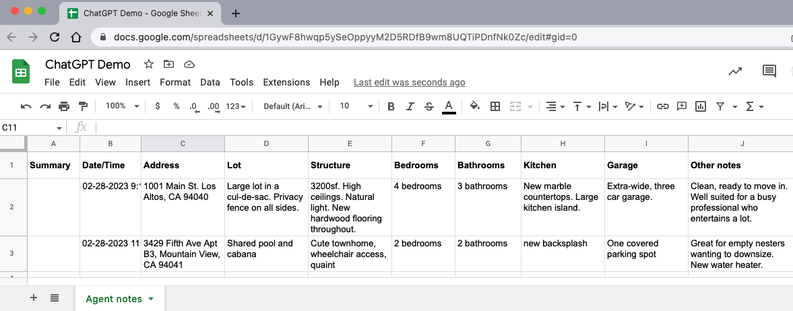
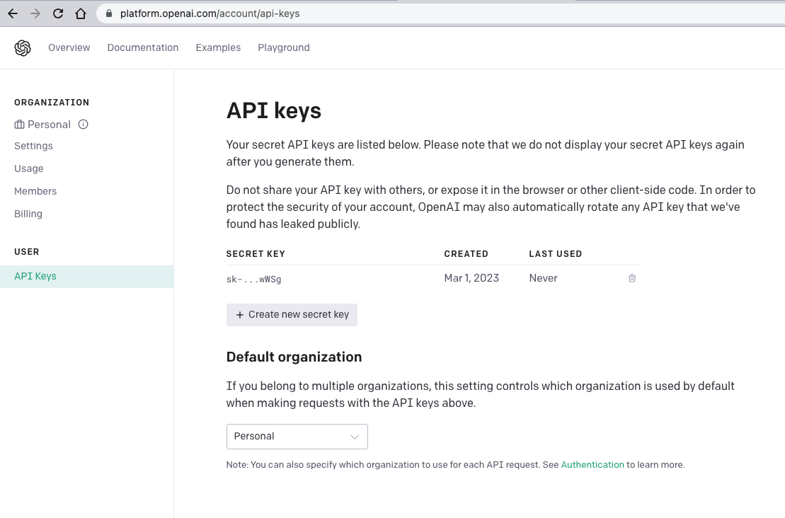
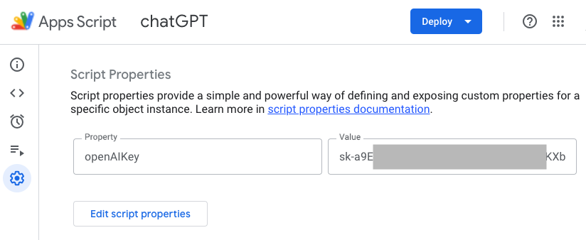

ChatGPT! It's on everyone's mind these days. Luckily, the OpenAI company offers a public API for ChatGPT, which means that we can connect to ChatGPT from Google Apps Script. Hooray!
To understand how to use the API, let's imagine that we work in a real-estate agency, where our agents tour new properties, take notes about each property, and compose property overviews with the notes from their tours to be posted on the MLS. We can use the ChatGPT API to feed the agent notes and receive a compelling overview automatically.
To get started, I have a Google Sheet that supposedly contains property entries. Each row represents a property. The sheet has various columns that describe the lot, structure, bedrooms, etc. The sheet looks like this:
Our Google Apps Script will iterate through the rows, taking the information from each row and converting it to a ChatGPT prompt. When it receives back the overview, the script will create a new Google Doc with the overview appended, name the file using the "Address" column, and move the file to a designated Google Drive folder. The script will then add a link to the Google Doc in the "Summary" column.
Getting started
Create a new Google Drive folder. Place a new Google Sheet in it and structure the sheet with a couple of data rows as you see above. Create a sub-folder that will contain your Google Docs.
To accomplish this script, you need to open an account with OpenAI. You can sign up using your Google Account. Once you have an account, you need to create an API key, that you will include in the API calls. To do so, click on your profile picture, and select "API Keys." Click "Create new secret key." Copy the generated key and paste it in a safe place. Do NOT share this key with anyone that you don't trust.
Next, in Google Sheet, click on "Extensions," and select "Apps Script." Click on the gear icon and scroll down to "Script Properties." Click "Add script property." In "Property" enter "openAIKey," and in "Value" paste your API key. Click "Save script properties.
Click on the "Editor" button to get back to the code screen. Inside "Code.gs," create a global object that we will use to store a few data elements needed for our script:
const g = {
folderId: 'paste-the-id-of-your-sub-folder',
};Copy the ID of your sub-folder (it's the sequence of characters at the end of the folder URL in the address bar) and paste it inside the "g" object's "folderId" property.
The ChatGPT API request
To get started, we can create the ChatGPT request function that will use a static prompt. It will help us understand how to structure our code. Here's the function:
function callChatGPT() {
const features = `Large lot in a cul-de-sac. Privacy fence on all sides.
High ceilings. Natural light.`;
const scriptProps = PropertiesService.getScriptProperties();
g.apiKey = scriptProps.getProperty('openAIKey');
if (!g.apiKey) {
throw new Error(`ChatGPT API Key script property is missing`);
}
const apiUrl = 'https://api.openai.com/v1/completions';
const options = {
method: 'post',
headers: {
Authorization: `Bearer ${g.apiKey}`,
'Content-Type': 'application/json',
},
muteHttpExceptions: true,
payload: JSON.stringify({
prompt: `Write a real-estate property overview using the
following property features: ${features}`,
model: 'text-davinci-003',
temperature: 1,
max_tokens: 150,
}),
};
const response = UrlFetchApp.fetch(apiUrl, options);
const content = response.getContentText();
console.log(content);
}The function above uses a static list of features in a single string. It gets the API key from the properties service. It has the ChatGPT API URL, as well as an "options" object that defines the request method as POST, the Bearer authorization header, and the payload. The latter is a stringified object that includes the prompt, the language model, the temperature (values between 0 and 2 which essentially indicate how creative ChatGPT should be), and the maximum number of tokens in the response.
The function then makes the call, retrieves the text content and logs it. When you run the function, you should see a stringified object that includes a nice overview with the features we've listed inside an "choices" array.
OK, so we understand how the ChatGPT request call is made. Now we need to modify the function a bit so that it can receive the features when called instead of using static features:
function callChatGPT(features) {
const apiUrl = 'https://api.openai.com/v1/completions';
const options = {
method: 'post',
headers: {
Authorization: `Bearer ${g.apiKey}`,
'Content-Type': 'application/json',
},
muteHttpExceptions: true,
payload: JSON.stringify({
prompt: `Write a real-estate property overview using the
following property features: ${features}`,
model: 'text-davinci-003',
temperature: 1,
max_tokens: 150,
}),
};
const response = UrlFetchApp.fetch(apiUrl, options);
const content = response.getContentText();
if (!response.getResponseCode().toString().startsWith('2')) {
console.log(content);
return null;
}
const jsn = JSON.parse(content);
if (!jsn.choices || jsn.choices.length === 0) {
console.log(jsn);
return null;
}
return jsn.choices[0].text;
}Above, we receive the features as a function parameter, so we don't need to declare the variable inside the function. We also removed the lines that fetch the API key: we want to do this once, not every time we call ChatGPT with a new property.
We also check that we get a 2xx response code from ChatGPT: we don't want to process the response if it includes errors. We parse the string into a JSON object and look for the "choices" array. We return the "text" property of the first element of the array.
Iterating through the Google Sheet
Let's write the code that will fetch the entires from the sheet that currently don't have a summary link, and send them to ChatGPT:
function createSummaries() {
const scriptProps = PropertiesService.getScriptProperties();
g.apiKey = scriptProps.getProperty('openAIKey');
if (!g.apiKey) {
throw new Error(`ChatGPT API Key script property is missing`);
}
const ss = SpreadsheetApp.getActive();
const sh = ss.getSheetByName('Agent notes');
const data = sh.getDataRange().getValues();
data.splice(0, 1);
data.forEach((row, i) => {
if (!row[0]) {
const features = row.slice(3, row.length).join(' ');
const text = callChatGPT(features);
if (text) {
console.log(text);
}
}
});
}In the function above we fetch the API key like we did before. We get the data out of the sheet and remove (splice) the first header row. We iterate through the rows looking for rows with empty cells in the first column. We take the row cells from the third column onward and join them with spaces. We then pass them to callChatGPT, and if we get a text back then we log it to the console.
All that's left is to paste the summary in a new doc, name the doc using the address column, and insert a link to the doc in the sheet. Here's the modified function:
function createSummaries() {
const scriptProps = PropertiesService.getScriptProperties();
g.apiKey = scriptProps.getProperty('openAIKey');
if (!g.apiKey) {
throw new Error(`ChatGPT API Key script property is missing`);
}
// Get the Google Drive folder using its ID:
g.folder = DriveApp.getFolderById(g.folderId);
const ss = SpreadsheetApp.getActive();
const sh = ss.getSheetByName('Agent notes');
const data = sh.getDataRange().getValues();
data.splice(0, 1);
data.forEach((row, i) => {
if (!row[0]) {
const features = row.slice(3, row.length).join(' ');
const text = callChatGPT(features);
if (text) {
const name = row[2];
const doc = DocumentApp.create(name);
const body = doc.getBody();
body.appendParagraph(text);
doc.saveAndClose();
const file = DriveApp.getFileById(doc.getId());
file.moveTo(g.folder);
const fileUrl = file.getUrl();
sh.getRange(`A${i + 2}`).setFormula(
`=HYPERLINK("${fileUrl}", "View summary")`
);
}
}
});
SpreadsheetApp.flush();
}Above, we get the subfolder and assign it to "g.folder" so that we can move the file into it later. Inside "if (text){}" we get the property address and store it in "name." We create a new Google Doc, get its body, append the text as a paragraph, and save the document. We then get the file using the doc's ID, move the file to the folder, and get its URL. Finally, we update the row with a link to the file. When we're done iterating through the rows we flush the spreadsheet changes.
If you run createSummaries now, your Google Sheet should be populated with links to the documents that contain the summaries.
Happy ChatGPT-ing!